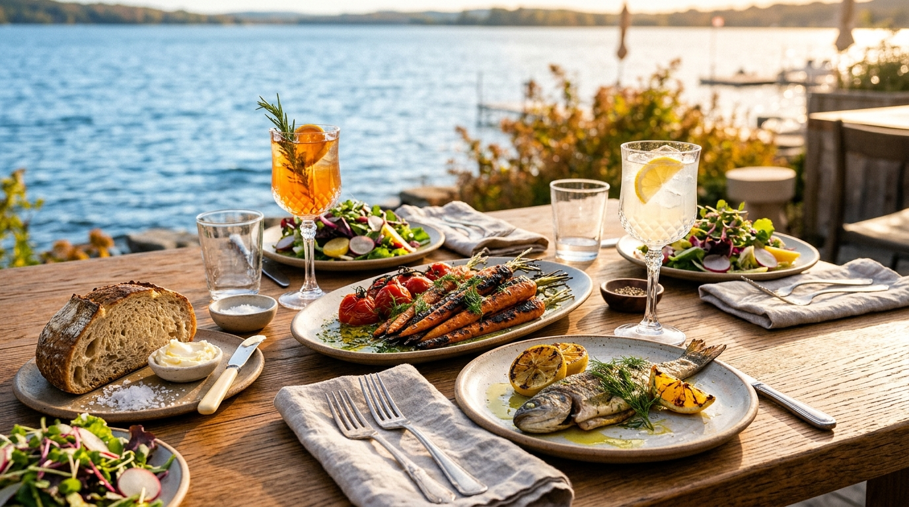

Claire Vance
Executive Chef & Co-Founder
Trained in Toronto and Ottawa before returning to Simcoe County to build a menu around wood-fire cooking and local produce.
Good food, regional growers, and an unhurried dining room facing Lake Couchiching.
Opened in 2024 on Mississaga Street East, Solstice & Shore brings together a small team of chefs, bakers, and bartenders who wanted a neighbourhood restaurant that reflects the pace of Simcoe County.
Our kitchen centers around a custom white-oak hearth. We source trout and whitefish from Georgian Bay, greens and root vegetables from Oro-Medonte, and Ontario craft wines from Niagara and Prince Edward County.

Executive Chef & Co-Founder
Trained in Toronto and Ottawa before returning to Simcoe County to build a menu around wood-fire cooking and local produce.
Beverage Director
Curates our Ontario VQA wine cellar and seasonal botanical cocktail program, including house-made zero-proof infusions.
General Manager
Leads front-of-house hospitality and coordinates private lakeside dinners, patio buyouts, and community market events.